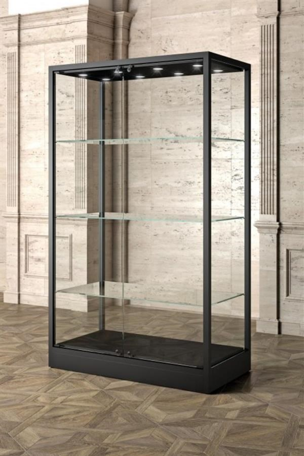

Vetrina degli Strumenti Scientifici
Questa vetrina ospita una raccolta di strumenti scientifici storici utilizzati per esperimenti e dimostrazioni nel campo della fisica e della chimica. Ogni strumento rappresenta un pezzo unico della storia dell'educazione scientifica.